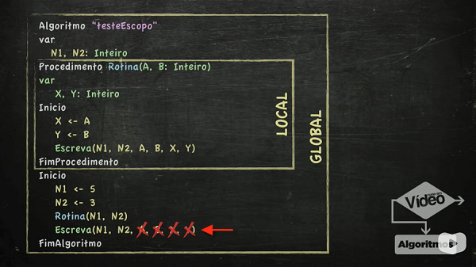

No livro Algoritmos - Lógica para Desenvolvimento de Programação de Computadores, José Augusto N. G. Manzano e Jayr Figueiredo de Oliveira definem da seguinte maneira um algoritmo:
Algoritmos são conjuntos de passos finitos e organizados que, quando executados, resolvem um determinado problema.
Os algoritmos estão presentes em todas as áreas de nossas vidas mais do que podemos imaginar. Os algoritmos fazem parte no nosso dia a dia quando navegamos na internet, assistimos um vídeo no Youtube, jogamos no celular ou num console um jogo qualquer, etc.
Atravessar a rua é um algoritmo:


E aprender algoritmos é simples. No início, tentamos criar rotinas para resolver pequenos problemas ou tarefas, como, por exemplo, somar dois números. Conforme os estudos avançam e nosso conhecimento a respeito do assunto melhora, os problemas ou tarefas a serem resolvidos vão ficando mais complexos.
No geral, algoritmo é todo tipo de rotina que você executa até mesmo no seu dia a dia. Tudo que você faz e é rotina pode ser considerado algoritmo.
São passos a serem seguidos por um módulo processador - qualquer equipamento capaz de efetuar processamento - e seus respectivos usuários que, quando executados na ordem correta, conseguem realizar determinada tarefa. Ou seja, são rotinas também, só que executadas pelo computador ou algum outro módulo processador.
Todo algoritmo começa com a lógica de programação. Essa lógica de programação está na nossa cabeça e desenvolvemos ela através do raciocínio lógico.
Após desenvolver sua lógica, podemos partir para uma linguagem de programação qualquer e essa linguagem de programação vai ser utilizada para criar um sistema completo, que é o app ou software que o usuário vai usar.

Variáveis são espaços na memória que vão guardar valores.
E para guardar esses valores, usamos essa estrutura:
var identificador: tipo
Exemplo:
var bola: brinquedo
Lê-se: vou guardar na memória a variável bola, que é um tipo de brinquedo.
Ou, em algoritmos...
var mensagem: caractere
Lê-se: vou guardar na memória a variável mensagem, que é do tipo caractere.

É formado pelo sinal de menor que e o sinal de menos: <-
mensagem <- "Olá, Mundo!"
Lê-se: a variável mensagem recebe o conteúdo que está entre aspas.
escreva e escreval
var mensagem: caractere Criei uma variável do tipo caractere.
mensagem <- "Olá, mundo!" Atribuí um valor a essa variável.
escreva ("mensagem") Vai escrever na tela: mensagem;
escreva (mensagem) Vai escrever na tela o conteúdo da variável mensagem;
escreva ("mensagem", mensagem) Vai escrever na tela: mensagem + o conteúdo dessa variável.
mensagem <- "Olá, Mundo!"
Identificador
Regras para o uso de identificadores:
São tipos de variáveis que a memória do visualg pode guardar:
Inteiro
Ex: 1 3 -5 198 0
Real
Ex: 0.5 5.0 9.8 -77.3 3.1415
Caractere
Ex: "Gustavo" "Algoritmo" "123"
Lógico
Ex: verdadeiro falso
No Visualg, usamos o comando leia.
Esse comando recebe os valores digitados pelo usuário para guardá-los na memória.
escreva ("Digite um número: ")
leia (numero)


Vão criar relações entre variáveis, valores ou expressões e gerar resultados lógicos, verdadeiro ou falso, sempre.


e = conjunção
ou = disjunção
não = negação
Não servem para comparar resultados de expressões ou números e sempre retornam resultados lógicos também.
Os operadores relacionais e os operadores lógicos resultam sempre em valores lógicos VERDADEIRO ou FALSO.
A melhor maneira de aprender é praticando, por que quando a gente pratica, a gente erra e, quando a gente erra, a gente tenta consertar, e é tentando consertar que você aprende.
-Gustavo Guanabara
Caso a expressão seja verdadeira, executa-se somente um bloco.
Estrutura do comando:
Se (expressao) entao
Bloco
FimSe
Exemplo:
Se eu tiver dinheiro então
vou fazer uma viagem pra Disney.
Uma forma de representar a frase acima em um algoritmo computacional seria essa:
Se (dinheiro >= 10000) entao
Escreva ("Partiu Disney")
FimSe
Caso a expressão seja verdadeira, executa-se um bloco, caso contrário, se for falsa, executa-se outro bloco.
Estrutura do comando:
Se (expressão) entao
Bloco A
senao
Bloco B
FimSe
Exemplo:
Se eu tiver dinheiro então
vou fazer uma viagem pra Disney
senão
vou ficar em casa
Representando a frase acima em algoritmo computacional:
Se (dinheiro >= 10000) entao
Escreva ("Partiu Disney")
senao
Escreva ("#chateado")
FimSe
Estrutura do comando:
Se (situação 1) entao
Bloco A
senao
Se (situação 2) entao
Bloco B
senao
Bloco C
FimSe
FimSe
Exemplo:
Se eu tiver muito dinheiro então
vou fazer uma viagem pra Disney
senão Se tiver uma graninha então
vou visitar minha cidade natal
senão
aí sim, vou ficar em casa
Agora, vamos usar uma linguagem formal de algoritmo para descrever o exemplo acima:
Se (dinheiro >= 10000) entao
Escreva ("Partiu Disney")
senao
Se (dinheiro >= 5000) e (dinheiro < 10000) entao
Escreva ("Visitar família")
senao
Escreva ("#chateado")
FimSe
FimSe
Com a estrutura Escolha...caso, você pode testar uma série de valores distintos dentro de uma mesma variável e executar blocos específicos para cada caso.
==========
Importante!
Dentro dessa estrutura não é possível usar operadores relacionais como maior que, menor ou igual a, por exemplo. Além disso, deve ser usada apenas para trabalhar com valores inteiros, se trabalhar com números reais, vai precisar usar a estrutura aninhada.
==========
Estrutura do comando:
Escolha (variável)
caso valor
Bloco A
caso valor
Bloco B
caso valor
Bloco C
OutroCaso
Bloco D
FimEscolha
A estrutura de repetição ENQUANTO vai permitir que você execute blocos de comandos várias vezes e simplificar a forma de representar lógicas que vão construir programas. Nessa estrutura, o teste lógico é feito no início. Perceba também que precisamos do operador lógico não para criar o loop.
Estrutura:
Enquanto (expressão) faca
bloco
FimEnquanto
Enquanto (não arrumar o quarto)* faca
castigo
FimEnquanto
*Se arrumar o quarto, estará liberado e sairá da repetição.
A estrutura Repita..Ate é uma estrutura de repetição com teste lógico no final, o que permite que você execute o bloco interno pelo menos uma vez, independente do resultado do teste. Repita...até é a inversão lógica da estrutura enquanto...faça.
Estrutura
repita
bloco
ate (expressao)
repita
castigo
Até (arrumar o quarto)*
*Se arrumar o quarto, estará liberado e sairá da repetição.
A estrutura Para.. Faça é uma estrutura de repetição com variável de controle, o que permite que você execute o bloco interno uma quantidade determinada de vezes.
Essa estrutura já vem com a atribuição e com o incremento incluídos.
O [passo salto] é opcional. O default dele é 1.
O PARA é diferente das outras duas estruturas de repetição por não precisar utilizar expressões lógicas para resolver o problema.
Um ponto de atenção: não utilizar essa estrutura quando não souber o número de repetições.
Procedimento é o primeiro tipo de rotina a ser aprendida nesse curso.


Quando a passagem é por valor, apenas o valor é passado - ou copiado - pra dentro do parâmetro do procedimento. Os valores iniciais, no programa principal, não são alterados.
Esse tipo de passagem não modifica em nada a variável do programa principal.

Quando a passagem se dá por referência, o parâmetro do procedimento tem uma referência automática ao valor da variável original. Qualquer alteração no parâmetro VAI AFETAR a variável original, no programa principal.
Utiliza-se, nesse caso, a palavra VAR para sinalizar que a passagem de parâmetro é por referência. O VAR não que dizer que você esteja declarando uma variável, e sim que você está fazendo uma referência às variáveis do programa principal.
Escopo é o local onde uma determinada variável vai funcionar.

Funções são o segundo tipo de rotina a ser aprendida no curso.
A principal diferença entre usar funcões e procedimentos é que durante um procedimento não tem como retornar um valor diretamente no programa principal, e durante uma função você tem um valor de retorno, ou seja, é possível retornar um resultado.
No exemplo abaixo:
funcao soma (a, b: inteiro) : inteiro
O último INTEIRO quer dizer que o valor de retorno que essa função dará é também um valor inteiro.
Já nesse outro exemplo:
funcao parOuImpar (v: inteiro): caractere
A função parOuImpar vai receber uma variável do tipo inteiro e retornar um valor do tipo caractere.
O uso de parênteses no RETORNE da função é opcional.
Ao trabalhar com função, o ideal é não escrever nada dentro do corpo da função, e sim retornar ao algoritmo principal pra que você possa escrever da maneira que achar melhor.
Vetores são Variáveis Compostas Homogêneas Unidimensionais, pois conseguem armazenar vários valores de um mesmo tipo em uma mesma variável.
Um vetor pode ter vários espaços internos, identificados por índices. A maneira correta de se declarar um vetor está na linha a seguir:
var v: vetor(1..10) de inteiro
A linha acima vai declarar uma variável v com 10 posições. Para inserir um valor dentro do vetor acima, podemos realizar a seguinte atribuição:
v(1) <- 100
Na linha acima, o valor 100 será colocado na posição 1 do vetor v.
Podemos também, permitir que o usuário digite os valores de cada posição, usando uma estrutura de repetição qualquer. Por exemplo:
Para contador <- 1 ate 10 faca
Escreva ("Digite um valor: ")
Leia v(contador)
FimPara
A variável contador, do trecho acima, será um valor inteiro que vai contar cada uma das 10 posições. O usuário digitará cada um dos 10 valores e eles serão armazenados no vetor.
Índice: é uma posição/endereço dentro do vetor.
Variáveis Compostas Homogêneas Unidimensionais = Vetor
A principal vantagem de se usar vetores é que podemos guardar e recuperar esses valores guardados.
Em variáveis simples, lemos um valor e a partir do momento em que outro é lido, ele apaga o valor anterior. Não dá para voltar no tempo e dizer em quais posições foram digitados os valores.
Com vetores temos vários espaços em um mesma variável e, por conta disso, podemos voltar e trabalhar com os valores lidos.


Matrizes são Variáveis Compostas Homogêneas Multidimensionais. Ao contrário dos vetores, para identificar um elemento em uma matriz é necessário usar mais de um índice (na maioria dos casos, apenas dois).
Para declarar uma matriz 3x3, podemos usar a linha:
m: vetor[1..3, 1..3] de inteiro
Para referenciar um elemento da matriz declarada acima, fazemos assim:
m[2,3] <- 5
O número 5 ficará, dentro dessa matriz, na linha 2 e na coluna 3.
Variáveis Compostas Homogêneas Multidimensionais = Matrizes
Matriz 3x3 é também conhecida como matriz de terceira ordem.
O minuto 29:28 dessa aula é muito engraçado!


Caso a tela apareça sem nada, basta digitar:
! CTRL espaço
Para mudar a cor:
Mudacor("AMARELO","FRENTE")